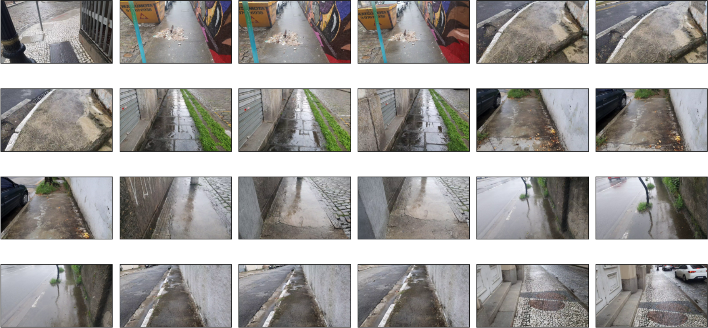

SideSeeing Project

The SideSeeing Project aims to develop methods based on Computer Vision and Machine Learning for Urban Informatics applications. Our goal is to devise strategies for obtaining and analyzing data related to urban accessibility. The project is expected to consist of six modules:
- Collection and generation of multimodal datasets;
- Preprocessing;
- Labeling;
- Visualization;
- Application of artificial intelligence tasks; and
- Analysis of information for decision-making.
As part of the initial module, an application for a mobile device's operating system is currently in the testing phase and is available here.
This application is capable of generating multimodal datasets using video cameras and sensors such as accelerometers, gyroscopes, and magnetometers from mobile phones attached to a low-cost wearable support.
Our current efforts are focused on collecting data in regions of Brazil and the United States of America. An overview of what has already been collected can be viewed here.
This is a project about Urban Informatics, which is an area characterized by the development of models to represent cities. In this context, the intersection between digital technologies and available infrastructure plays a significant role. Data from sensors installed in the city's infrastructure enable the generation of models capable of providing inputs for decision-making. Examples of these inputs include characterizations of building facades, sidewalk conditions, presence of vegetation, region-specific noise levels, land use, among others.
These pieces of information can be in various data representations such as visual data captured by video cameras, sound data captured by microphones, textual data extracted from region-related databases, and temporal data obtained from sensors in mobile devices, for instance. It is worth noting that real-world situations, especially those related to Urban Informatics, are inherently multimodal.
Look at a demonstrative video of the project.